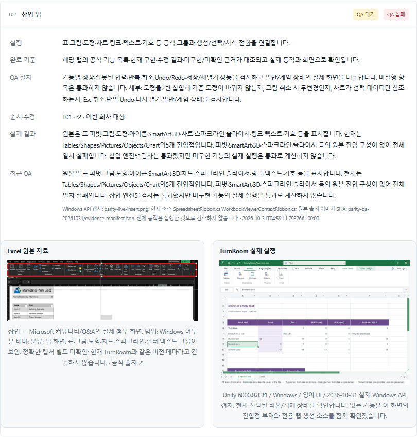

Codex 설정수정사항
Codex 설정수정사항작업 메뉴얼에 원본·실제 화면 대조 근거 표시
완료작업별 안전한 이미지 필드와 반응형 비교·펼치기·직접 링크를 추가하고 편집 폼의 근거 보존을 검증했습니다.
작업 결과
TurnRoom의 기존 메뉴얼에서 각 케이스의 원본과 실제 실행 화면을 비교할 수 있도록 공통 표시 기능을 추가했습니다. 이전 QA 판정·작업 목록을 변경하는 기능이 아닙니다.
변경 내용
적용 내용
선택 사항인 tasks[].visualEvidence에 reference/current·같은 프로젝트의 이미지 경로·설명·공식 HTTPS 출처를 저장합니다. HTML·Markdown·JSON에 보존하고 실제 케이스 안에 두 열로 표시합니다. 모바일 한 열·전체 펼치기/접기·케이스 직접 링크를 지원합니다. 편집 폼 재저장에서도63개 이미지 근거를 보존했습니다. URL/경로 검증과 HTML 이스케이프를 적용했습니다.
검증
기존31개를 포함한 사이트 회귀41검사 통과. 신규4검사는 경로/스킴/인증정보 거부, 기존 메뉴얼 호환, 실제 HTML 렌더링을 확인합니다. 브라우저에서27개 케이스, 실제32개·원본31개 참조, 깨진 이미지0, 스크립트 오류0, PC/모바일 넘침0, 목록 검색1건을 확인했습니다. 실제 작성 폼 왕복에서27개 작업·63개 이미지 근거가 유지되었습니다. 전체 링크 검사493개 Markdown/HTML 쌍·18068개 로컬 링크 통과(이 보고서 추가 전 기준). 첫 전체 검사에서 기존 템플릿 테스트가 Windows CRLF를 읽지 못해 실패한 것을 확인해 LF 정규화 후 재QA했습니다.

남은 사항
실제 원본이나 현재 캡처가 없는 항목을 이미지로 생성하지 않습니다. 파일 존재·렌더링 성공이 제품 기능 QA 통과를 뜻하지 않습니다. 지침 교훈 검토: 기존의 실행 근거·미실행 분리 원칙이 이미 있어 전역 변경 없음. 공개 배포 확인은 GitHub Actions/HTTP로 별도 확인합니다.
작업 시간
- 제안 시간: TurnRoom 케이스 대조40~70분의 필수 표시 개선 범위에 포함. 시작2026-10-31 13:39:03 KST.
- 실제로 완료된 시간: 공통 기능 구현·브라우저/폼 검증 종료2026-10-31 14:05:30 KST. 사이트 전체 게시 확인은 별도 기록합니다.
- XERJ: 미사용 — 사이트 렌더러는 직접 파일 대조와 실제 브라우저로 확인했습니다. TurnRoom 리본 검색에는 XERJ를 사용해 별도 보고했습니다.